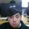

Estudiante de 4° Medio | Programación - INSUCO Valparaíso
Soy Amaro Fornes, estudiante de 4° medio de la especialidad de Programación en el Liceo INSUCO Valparaíso. Me apasiona crear soluciones tecnológicas, desde páginas web hasta sistemas simples de gestión. Me considero responsable, curioso y con ganas de seguir aprendiendo para mi futuro laboral o universitario.
Al salir de 4° medio quiero seguir estudiando Ingeniería en Informática y a la vez hacer mi práctica profesional desarrollando páginas web para pymes de Valparaíso. Mi sueño es crear una aplicación que ayude a organizar el turismo local.
Ver mis proyectos
✔ Sistema de cajero automático con diagrama de flujo
✔ Página web responsiva de las especialidades de INSUCO
✔ Test vocacional "¿Qué especialidad elijo?" para 2° medio